This content is licensed under a Creative Commons Attribution-ShareAlike 4.0 International License.
This webpage lists the KartaVR example compositing projects that include large media files and Fusion .comp files. This media will get you up to speed with node based live action panoramic 360° video stitching and photogrammetry workflows in Fusion.
These files are designed to show several different workflows for stitching and editing 360° panoramic imagery. There is approximately 16 GB of panoramic video stitching and photogrammetry project files available for download from the web when you view the "Reactor:/Deploy/Docs/KartaVR.Stitching/index.html" webpage. You can access this example stitching footage resource page from inside Fusion by opening the "Scripts > KartaVR > View KartaVR Example 360VR Stitching Comps" menu item.
There is a real cost to keep this media online and to create new learning materials in the future. Please consider making a small donation to help offset the server hosting costs if this media was useful to your Fusion VR learning efforts: http://www.paypal.me/andrewhazelden
Cheers,
Andrew Hazelden
Email: andrew@andrewhazelden.com
Web: www.andrewhazelden.com
This content is licensed under a Creative Commons Attribution-ShareAlike 4.0 International License.

This comp imports a set of three fisheye camera views shot on a Sony A7Sii 4K camera using a Peleng 8mm circular fisheye lens. The footage was originally recorded on location to an Atomos Ninja Flame SSD Video recorder.
A Sony SLOG3.Cine color profile LUT is applied to the footage and the media is converted into a REC709 color space. The fisheye footage is then stitched into an Equirectangular/Spherical/LatLong panoramic image projection and the tripod is removed from the shot. The final image sequence is then color corrected and written to disk. The ViewerEquirectangular node at the end of the comp tree allows us to preview the look of the panoramic 360° imagery inside of Fusion with several handy "view bookmarks" saved using the node's S1, S2, S3, S4, and S5 preset slots.
This project includes three still images from the Atomos 4K video recordings, along with a 20 second long image sequence that has the three camera views packed together in a side by side format.
Under the Bridge Example on YT360
April 2017 Note: The example file KartaVR-Stitching-Demo.zip has been updated and simplified to use the newer nodes available in KartaVR. If you want to follow along with the exact steps in the original "Under the Bridge" tutorial, then you can also download this example as well: Sony-A7Sii-Rig-Under-the-Bridge.zip
This image shows what it looks like when the Atomos video recorder is capturing a 4K HDMI video stream from the Sony A7Sii based Nodal Ninja camera rig:
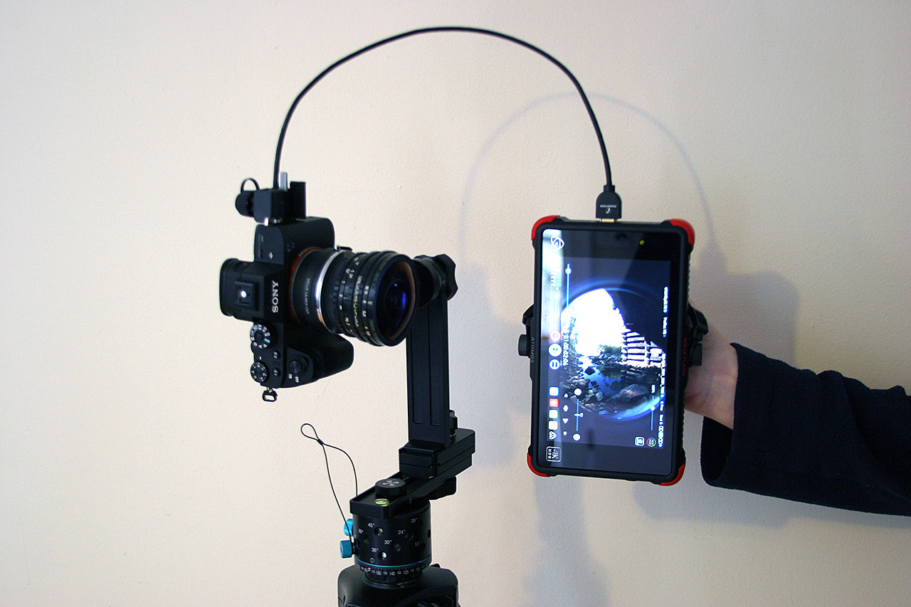
The example footage was filmed on a Sony A7Sii camera by Andrew Hazelden.
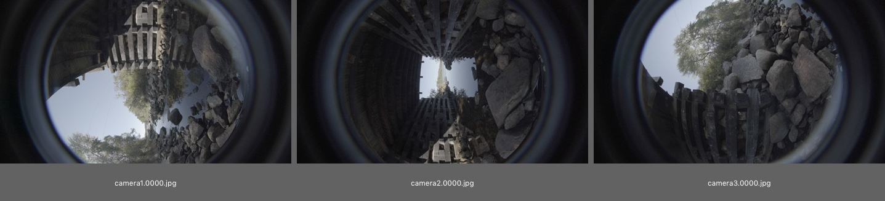
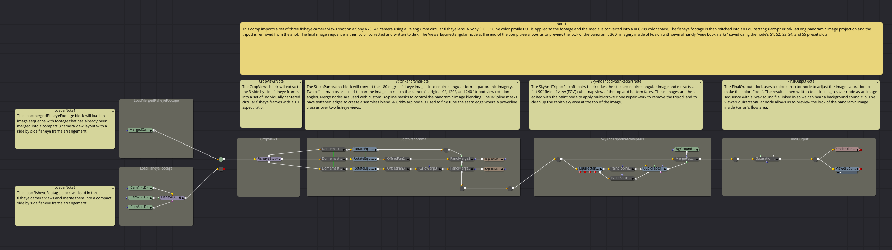
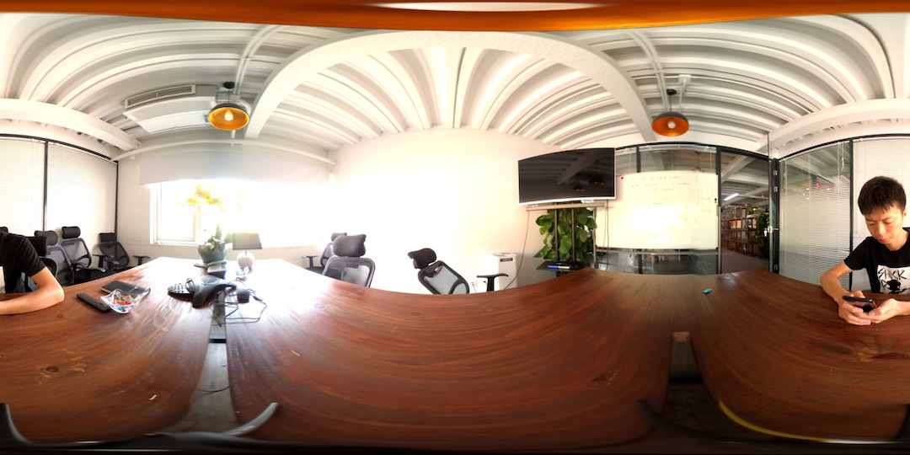
This example shows how to process YI360VR camera footage.
The stitching template starts by adding two "FisheyeCropMask" nodes that are applied to the front and back circular fisheye camera views. The FisheyeCropMask node is used to smoothly feather out the border of the images. You will need to modify the "FisheyeCropMask" node's width and height value to match the resolution of your 2048px or 2880px resolution Yi camera fisheye footage.
The front and back video files are added to the Fusion composite using a pair of loader nodes named "FrontLoader1" and "BackLoader1".
The circular fisheye footage is converted into an Equirectangular/LatLong/Spherical image projection using a pair of "Fisheye2Equirectangular" nodes. The fisheye image has an approximate 197 degree field of view once the fisheye masking is applied so the "Fisheye2Equirectangular" node's "FOV" control is set to 197 degrees. On the back camera view the "Yaw (Y Rotation)" control is set to 180 degrees to position the clip at the back part of the equirectangular frame.
A merge node is used to blend the final warped front and back camera views. If you want to look at the edge seaming to check the overlap region you can change the merge node's "Apply Mode" control from the default "Normal" setting to "Difference" for a quality control check. The difference mode is handy as the blending areas will be shown clearly in black.
A "ColorCorrector" node has been added that can be used to adjust the final blended image. In this example the source imager looks nice so no manual color correction is required.
A "ChangeDepth" node is used to convert the footage to an 8 bit per channel color depth which is a good setting to use when encoding an MP4 movie.
A "Saver" node is used to write the final output from the composite to disk. The saver node's "S1" preset will save out a TIFF image sequence, and the "S2" preset will save out an MP4 H.264 movie.
Here is a link to a short YouTube 360 video rendering output created by the YI360VR example:
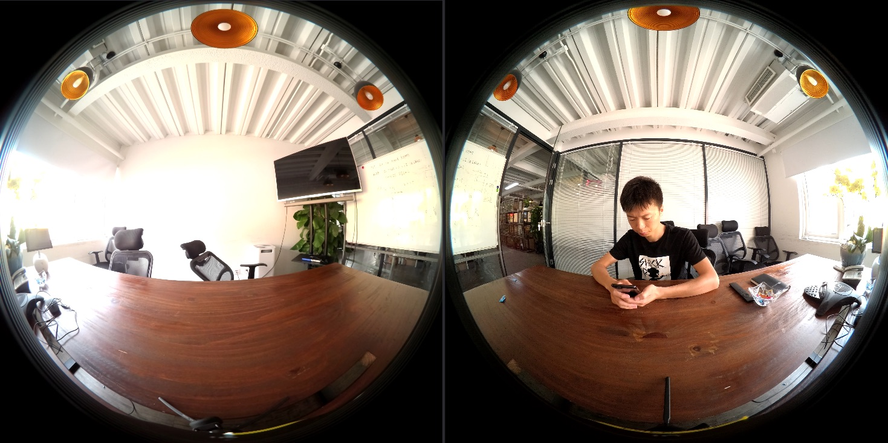
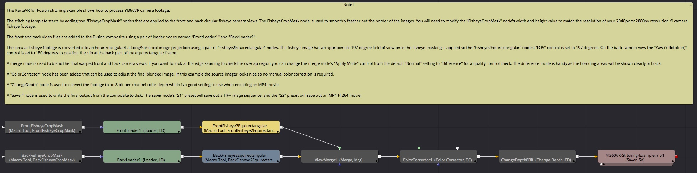
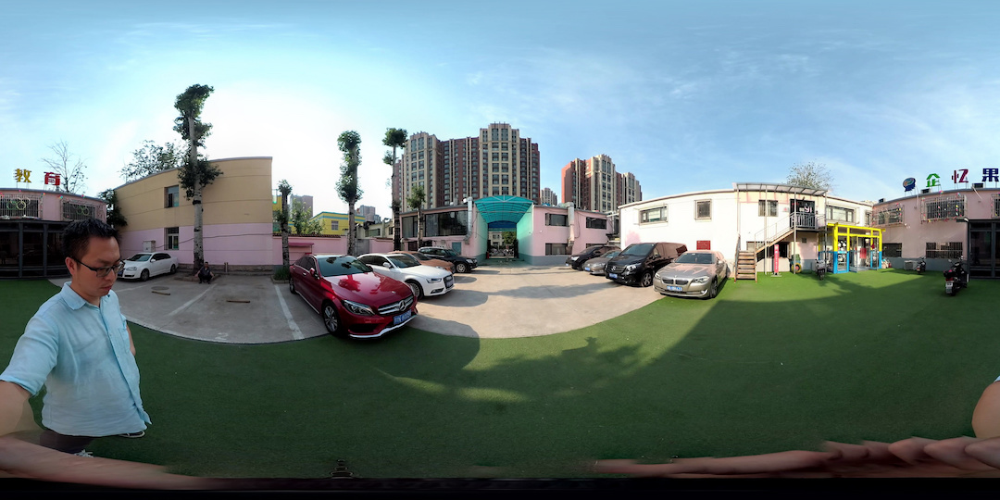
This project uses PTGui Pro and KartaVR to create a set of YIVR 360 fisheye lens calibration settings and a pre-computed set of UV pass stitching template images. A node based stitch was created from the PTGui .pts file along with a UV pass based stitch so the two approaches could be compared.
If you are going to process YIVR 360° MP4 video footage that is 2880x5760 px in size it is a good idea to run the KartaVR for Fusion based Script > KartaVR > Movies > Convert Movies to Image Sequences menu item to batch process the video footage into flat images. This allows you to get a faster and higher quality stitched output in Fusion and makes it possible to create the PTGui stitching template too. You can also use KartaVR's BatchBuilder scripts to send the converted image sequences into the PTGui BatchBuilder module for image sequence based stitching.
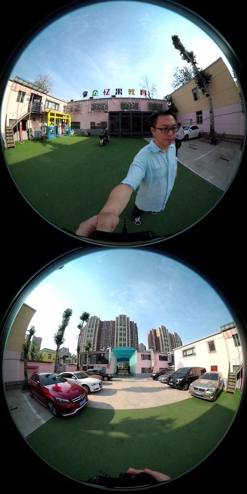
KartaVR Stitching a YIVR 360 Parking Lot Scene
https://www.youtube.com/watch?v=2dsklVQKLFk
This video shows the results of KartaVR for Fusion parametrically stitching the raw front and back fisheye lens footage from a YIVR 360 camera. The footage was filmed in a parking lot and the YIVR 360 camera is rotated slowly around the nodal point.
KartaVR UV Pass Stitching a YIVR 360 Parking Lot Scene
https://www.youtube.com/watch?v=kBylx2GVJJo
This video shows the results of KartaVR for Fusion using a UV pass approach to stitch the raw front and back fisheye lens footage from a YIVR 360 camera. The footage was filmed in a parking lot and the YIVR 360 camera is rotated slowly around the nodal point.
PTGui was used to calculate the fisheye lens field of view and to work out the basic lens distortion settings for the Yi360 VR camera. This was done by placing the camera on a tripod and doing a slow nodal pan while recording a raw unstitched fisheye video clip. The fisheye video clip was then converted into an image sequence at 1 frame per second using the KartaVR "Convert Movies to Image Sequences" script.
The nodal pan footage was loaded into a pair of PTGui project files and custom circular cropping was applied to extract the top and lower view fisheye images. PTGui then analyzed the footage and created a seamless panoramic stitch.
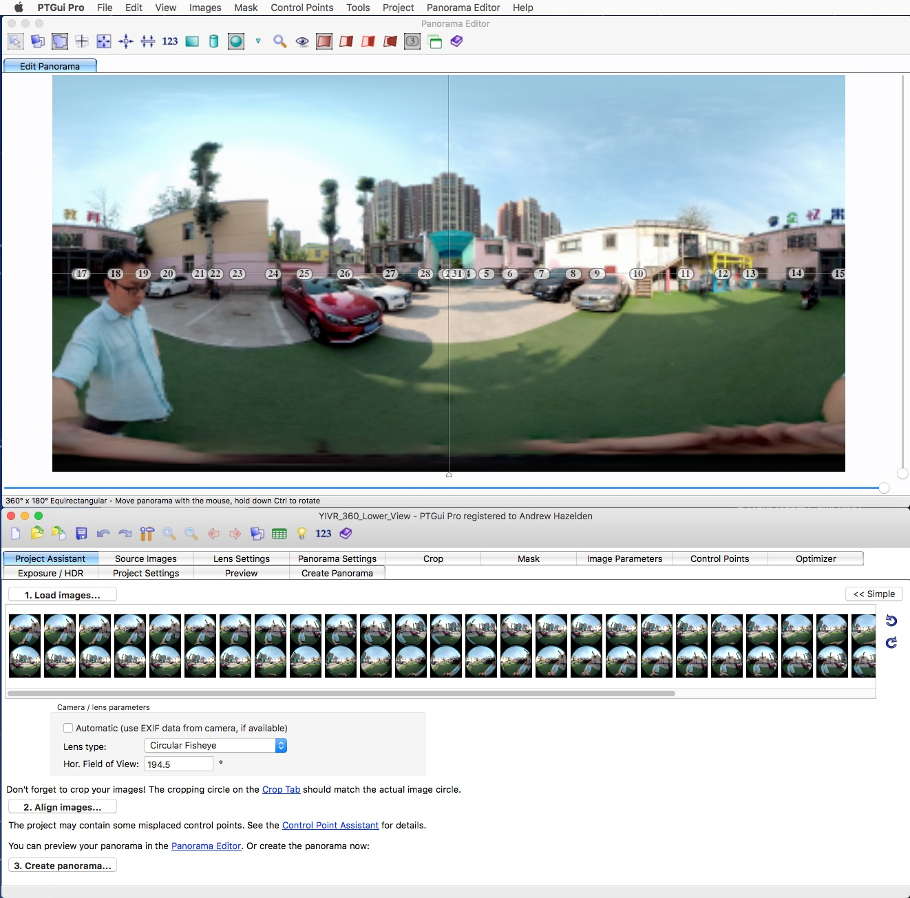
Top Fisheye View
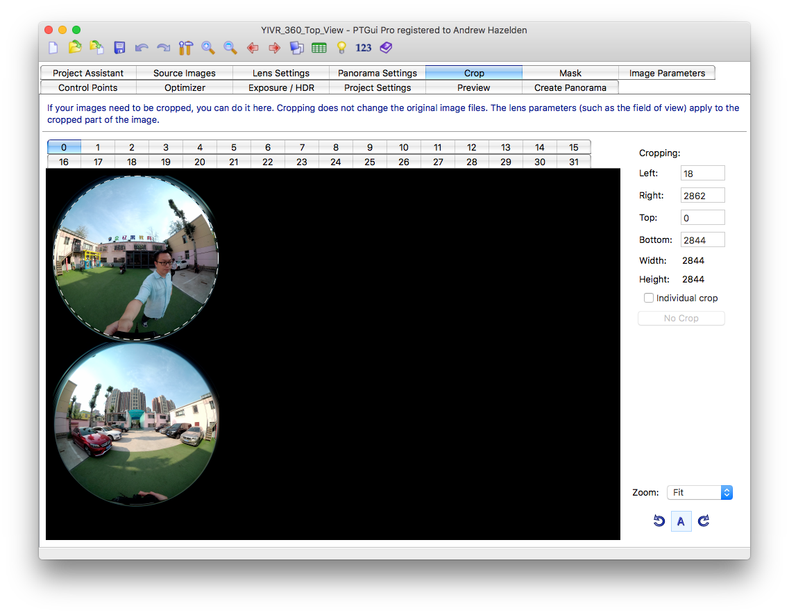
Crop:
Lens Settings:
Image Shift:
Image Parameters (Manually Positioned):
Lower Fisheye View
Crop:
Lens Settings:
Image Shift:
Image Parameters (Manually Positioned):
YIVR Panoramic 360° Nodal Rotation based PTGui Stitching Project:
PTGui Panoramic Stitched Calibration/YIVR_360_Top_View.ptsPTGui Panoramic Stitched Calibration/YIVR_360_Lower_View.ptsYIVR Single Frame Front/Back Lens based PTGui Stitching Project:
PTGui Single Frame Stitch/YIVR_360 Single Frame.ptsKartaVR imported PTGui .pts file based stitching project:
PTGui Single Frame Stitch/YIVR_360 Single Frame KartaVR.compKartaVR's PTGui Project Importer tool was used to do a node based stitch. Since the top and lower fisheye views are being pulled from the same cropped over/under style image layout a "FisheyeCropMask" node based feathered mask is used on the fisheye views.
To get the best results possible after the PTGui .pts file was imported an X/Y placement adjustment was done to better fit the mask to the center of each fisheye view, and an edge softening adjustment was done to maximize the amount of blending overlap available on the two fisheye views.
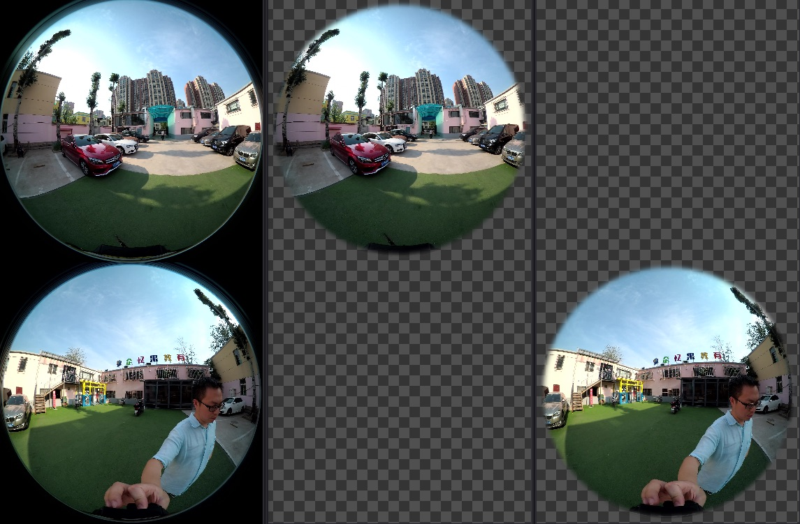
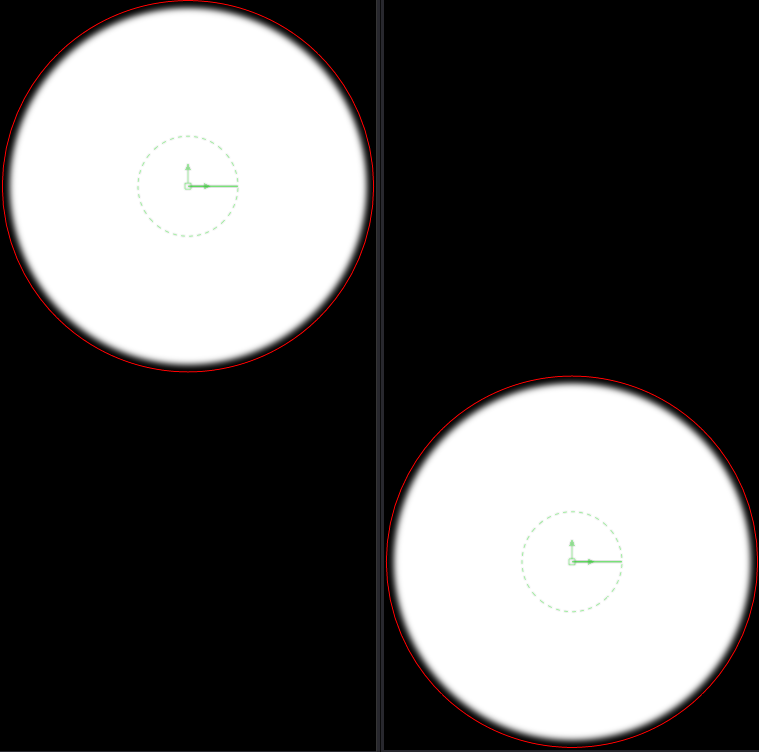
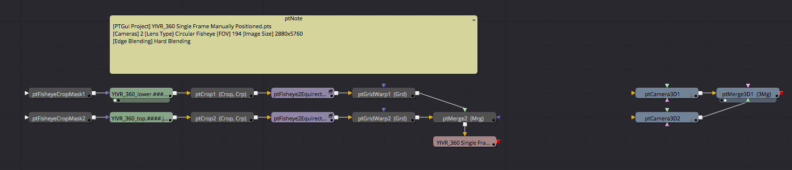
KartaVR has a UV pass map creation tool that allows the stitching artist to quickly and easily convert a PTGui Pro .pts project file into a set of ready to use uv pass warping template images. It is possible to use the KartaVR generated UV pass warping template images in After Effects with the RE Vision Effects RE: Map plugin, in Nuke with the ST Map node, or in TouchDesiger for live realtime panoramic video stitching.
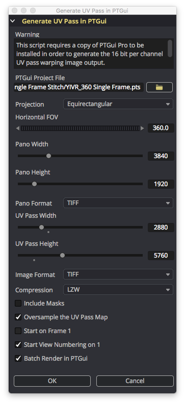
Example Fusion UV pass stitching composite:
UV Pass Stitching/UV Pass Stitching Project.compThis example project uses KartaVR created UV pass warping template images to stitch the YIVR 360 dual fisheye footage into a final equirectangular output. In the example Fusion project a gridwarper was applied to the uv pass images to further clean up the frame blending zone and reduce any of the remaining lens distortion artifacts.
This gridwarping stage resulted in the creation of the following UV Pass template images:
UV Pass Stitching/YIVR_360 Single Frame_uvpass_gridwarped_0001.0000.tifUV Pass Stitching/YIVR_360 Single Frame_uvpass_gridwarped_0002.0000.tifA set of alpha blending masks was also created by the "UV Pass Stitching Project.comp" file:
YIVR_360 Single Frame_uvpass_mask_0002.0000.tifYIVR_360 Single Frame_uvpass_mask_0001.0000.tif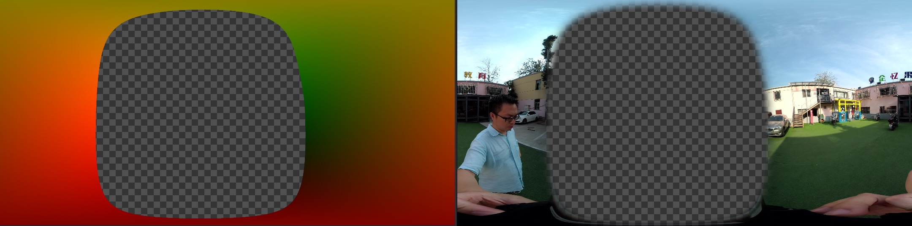
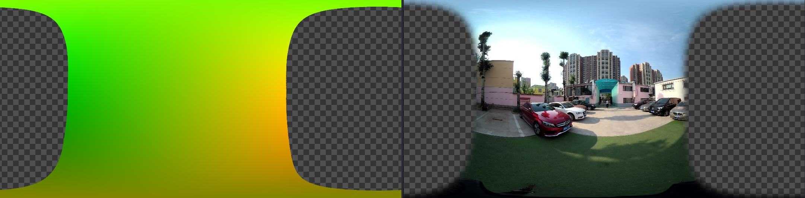
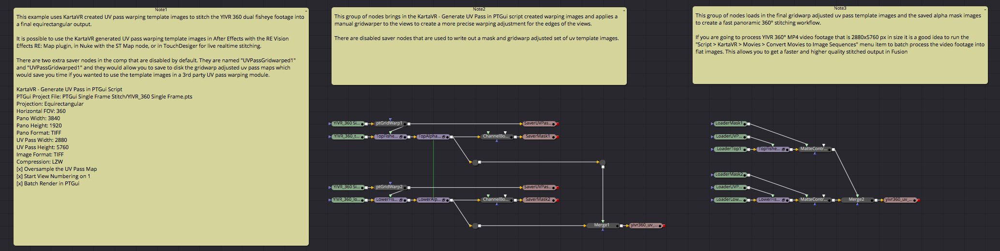
In order to create the YIVR camera based UV Pass template images the following settings were used in the "Generate UV Pass in PTGui" script.
PTGui Single Frame Stitch/YIVR_360 Single Frame.ptsUV Pass Map Output:
YIVR_360 Single Frame_uvpass_0001.0000.tifYIVR_360 Single Frame_uvpass_0002.0000.tifUV Pass Generator PTGui Project Output:
YIVR_360 Single Frame_uvpass.ptsUV Pass Generator Source Gradient Rectangle:
uvpass_5760x11520.0000.tif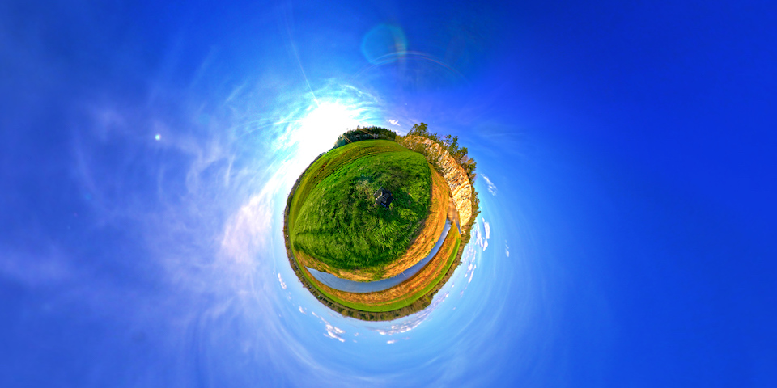

This example stitches fisheye camera rig footage into the equirectangular image projection. Then the composite converts the stitched footage into a stereographic format of image projection that is also known as a "Tiny Planet" image due to the way the scene is warped to look like a small mini version of earth. With a "Tiny Planet" format panorama, anything in the photo that is positioned above the horizon line is pushed outwards into the sky.
The source media was captured using 8 photos taken with a Peleng 8mm circular fisheye lens on a Canon 10D camera body. This camera has an APS sized sensor with a 1.6 FOV sensor crop ratio that cuts out most of the circular border area from the fisheye image.
The "Generate UV Pass in PTGui" script helped make the UV pass warping templates that were used to stitch the fisheye footage into an equirectangular projection.
A color correction pass was applied to boost the vividness of the stitched imagery. The next step was to use a "ColorCorrectorMasked" node to add a vertically positioned "graduated neutral density" filter style sky darkening effect to restore detail in the sky.
The final equirectangular image was then converted to a tiny planet image projection using another UV pass warping operation. This tiny planet output was created with a UV pass map that was generated from a PTGui .pts project file that was set to "Stereographic" output.
The example footage was filmed on a Canon 10D by Andrew Hazelden.
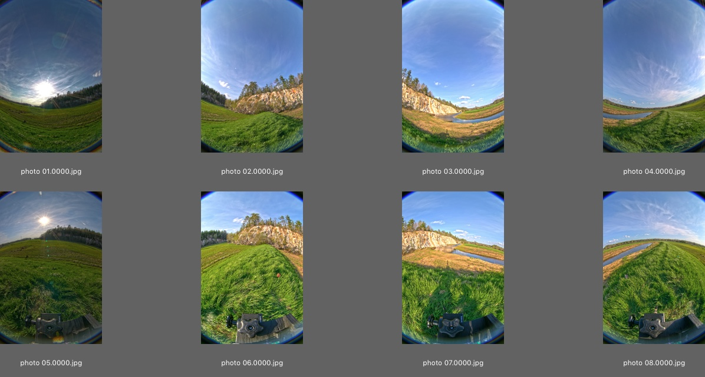
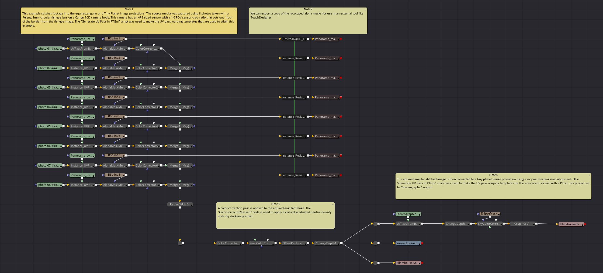
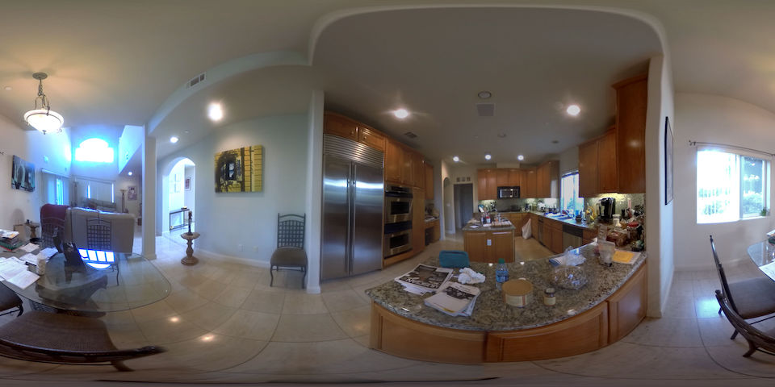
This example shows how an Elmo 4 camera based PTGui .pts project is converted into UV pass maps using the new Fusion script Generate UV Pass in PTGui. These UV pass maps are used to finish the shot by warping and stitching the panoramic imagery inside your Fusion comp. GridWarp nodes were used to apply subtle corrections to each of the images to result in a more seamless stitch.
The example footage was filmed on an Elmo QBiC MS-1 rig by Kino Gil from the Agatha VR short film.
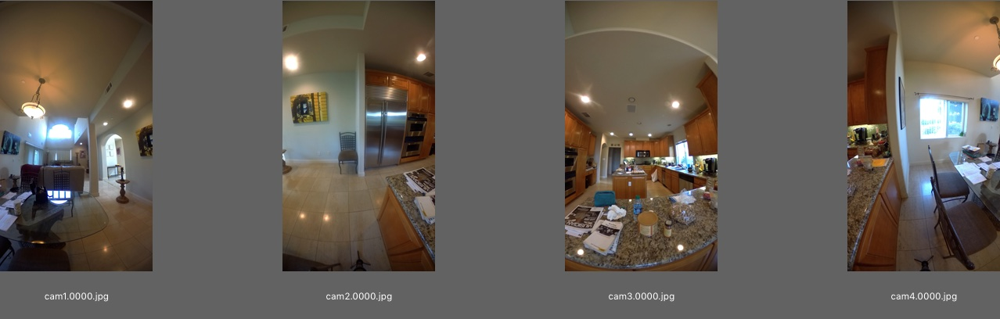
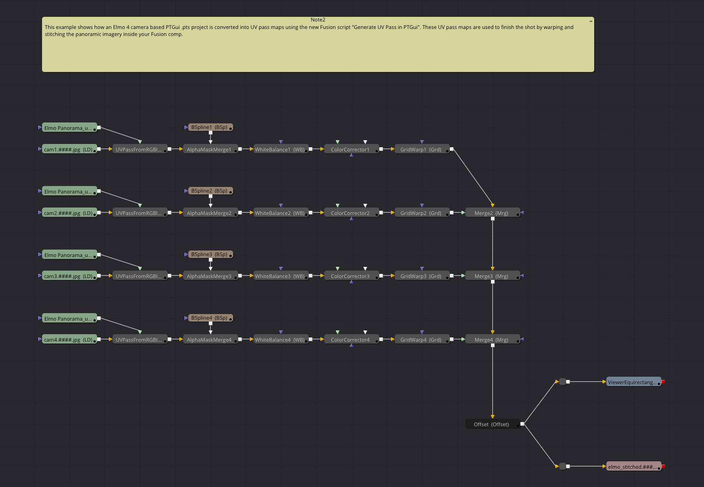

This example shows how a Freedom360 6 camera based PTGui .pts project is converted into UV pass maps using the new Fusion script Generate UV Pass in PTGui. These UV pass maps are used to finish the shot by warping and stitching the panoramic imagery inside your Fusion comp.
ColorCorrector nodes were used extensively to help adjust for the fact each of the GoPro cameras in the Freedom360 rig were running with the auto exposure mode enabled.
This example footage was provided by Fabien Soudière of Making 360.
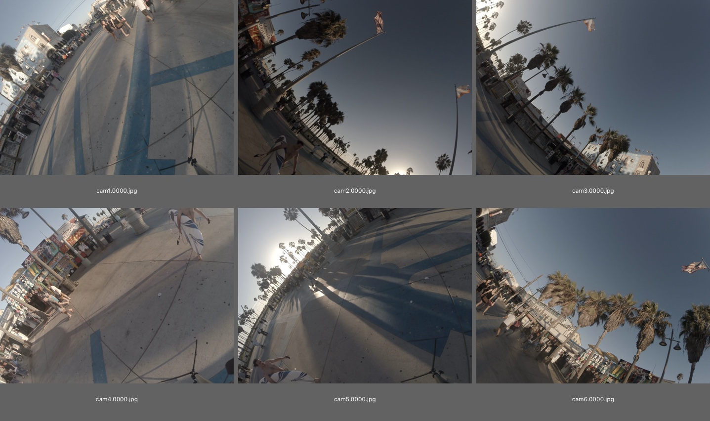
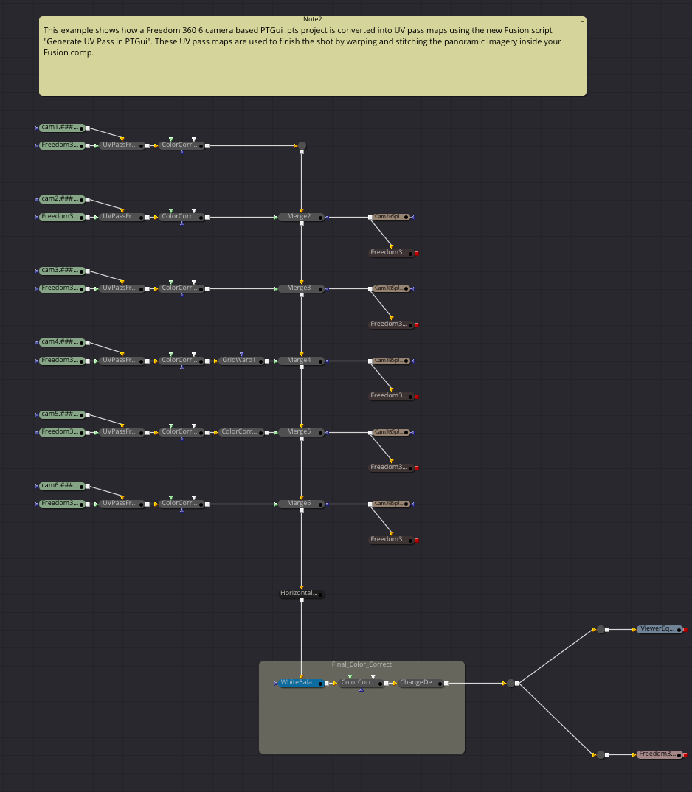
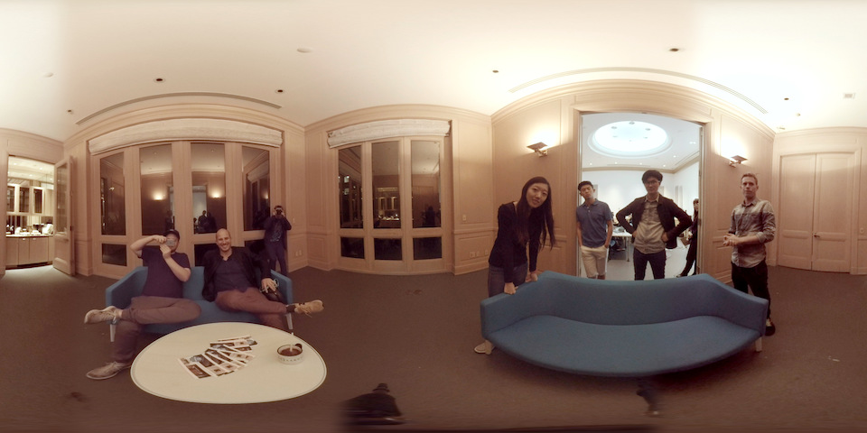
This example shows how an iZugar Z3X 3 camera based PTGui .pts project is converted into UV pass maps using the new Fusion script Generate UV Pass in PTGui. These UV pass maps are used to finish the shot by warping and stitching the panoramic imagery inside your Fusion comp.
A GridWarp node is used to clean up a stitching artifact on the right side of the blue sofa to create a more seamless stitch.
The example footage was filmed on an iZugar Z3X rig by Fabien Soudière of Making 360.
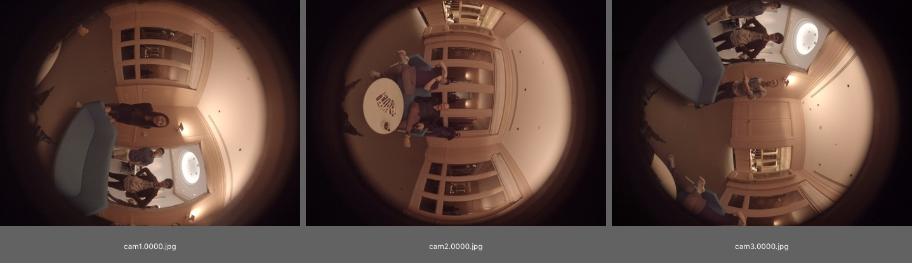
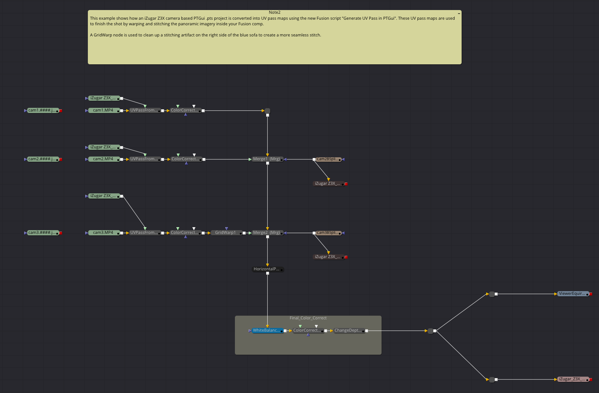
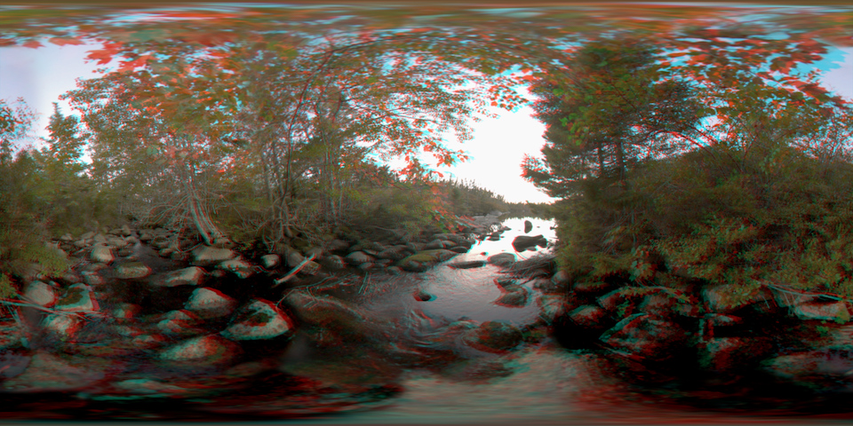
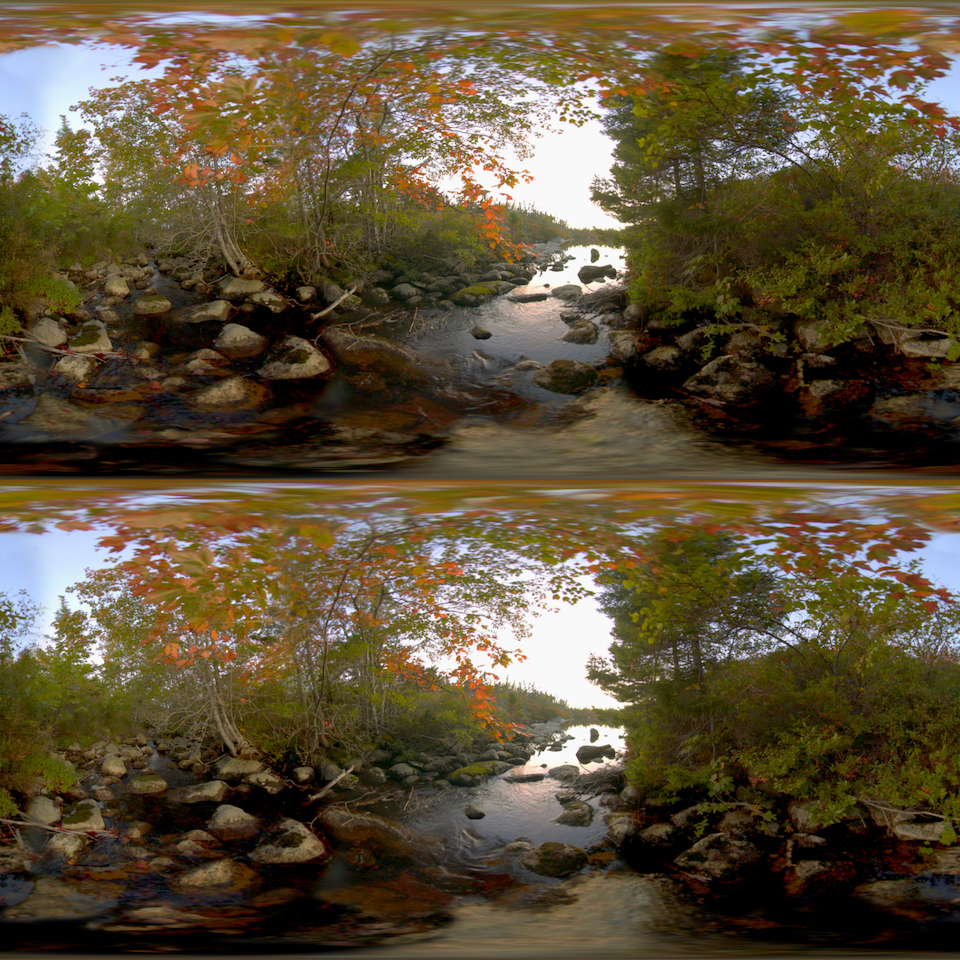
This example shows how 6 images (3 left eye view, and 3 right eye view) 180° fisheye images are stitched into a final stereoscopic 3D 360° panoramic output.
The images were captured using a Nodal Ninja 3 indexed panoramic camera head with a stereo slide bar. The stereoscopic filming approach used a Nodal Ninja Advanced Rotator RD16-11 camera head that was rotated to the 0°, 120°, and 240° positions when photographing the left and right stereocopic 3D fisheye images. Each of the left and right fisheye stereo view pairs were captured with a 6.5 cm eye separation distance using a Jasper Engineering Stereo Slide Bar.
Note: The "Powers-Lake-3603D-Fusion-9.zip" example file is a modified version of this Fusion project that uses some of the new VR features in Fusion 9 to perform the tripod repair patching work.
The procedure for capturing the six fisheye images required for a successful single camera shot "omnidirectional" 3603D panoramic image looks like this:
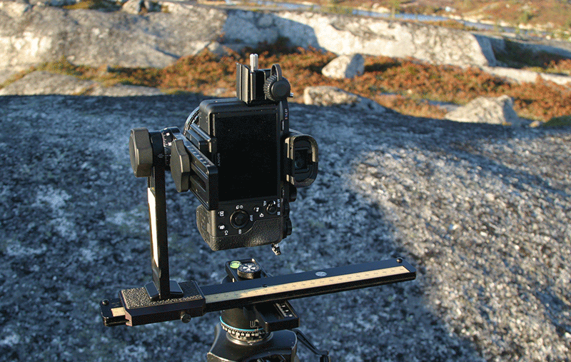
The example footage was filmed on a Sony A7Sii camera by Andrew Hazelden.
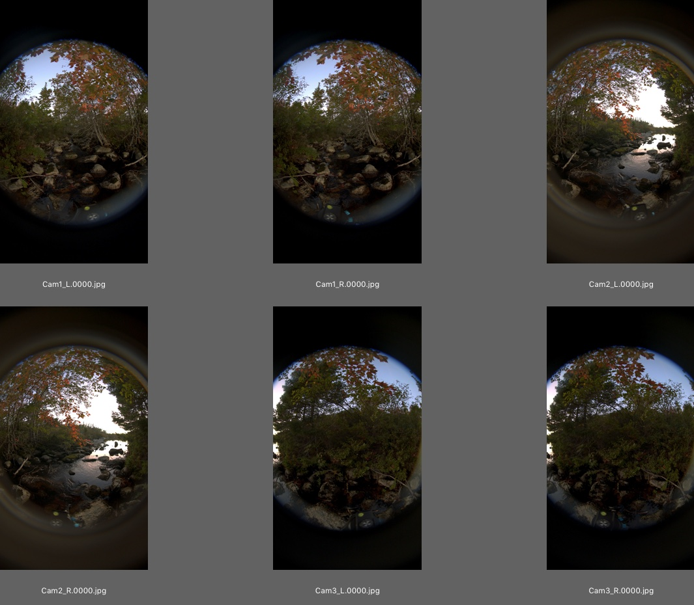
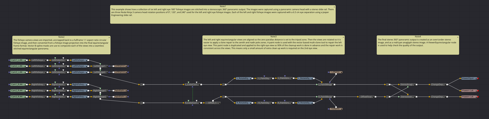

This Fusion example project shows an approach for creating "Tiny Planet" style stereographic projection imagery. The project starts with an equirectangular image that is loaded into a PTGui Pro .pts file that has the stereographic output projection enabled.
This .pts file is converted into a UV pass warping map using the Scripts > Stitching > Generate UV Pass in PTGui menu item in Fusion.
In the script the Projection is set to "Stereographic". The UV Pass Width is set to 3840, and the UV Pass Height is set to 1920. The Over Sample UV Pass Map checkbox is enabled. Pressing the OK button will start the process of generating the UV pass warping map image which is saved to the same "Comp:/" path map folder on disk as the current Fusion compositing file.
You will need to load the new stereographic projection warping map image named Stereographic Night_uvpass_0001.0000.tif into the comp. The UV pass warping map is connected to the "UV Pass" input on a "UVPassFromRGBImage" macro node.
The original equirectangular format imagery is loaded into the "image" input on the "UVPassFromRGBImage" macro. You can animate the placement of the tiny planet effect by adjusting the U Offset control on the "UVPassFromRGBImage" macro node and the Tiny Planet view will rotate.
The composite then applies a vignetting effect to the tiny planet image, and crops the output to the final frame size.
The example footage was filmed on a Sony A7Sii camera by Andrew Hazelden.
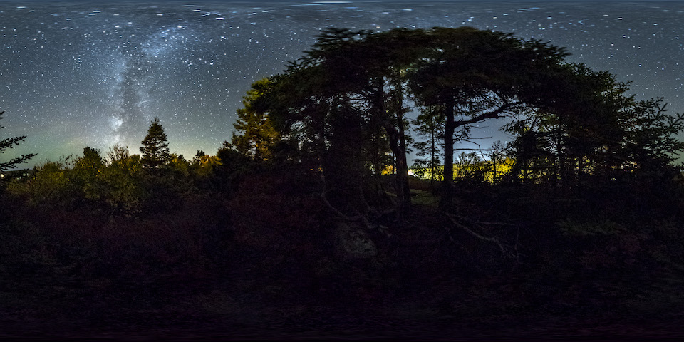
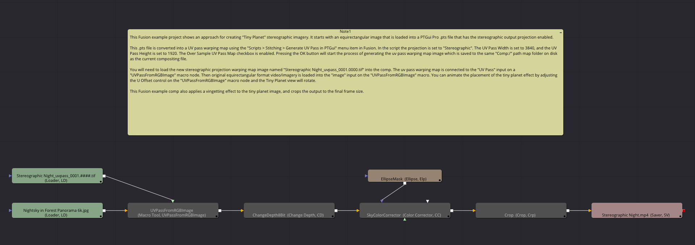
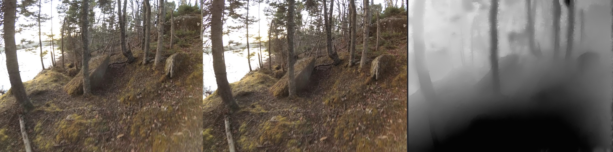
This example composite shows how Fusion Studio can be used to create a greyscale depthmap using a disparity mapping approach. The source footage is a pair of left and right camera views filmed on a pair of syncronised Yi 4K action cameras at 2560x1920px resolution.
The left and right views are loaded into Fusion using a pair of Loader nodes.
A "Combiner" node is used to merge the left and right camera views in to a side by side stereo video clip.
Then the "Disparity" node generates the Disparity X/Y channels.
The "DisparityToZ" node converts the Disparity X/Y channels into a Z-Depth channel.
The side by side video is then cropped down to just the left camera view using a Crop node. An expression is used to set the image size on the Crop node where the X Size value is set to the width of the Loader1 node, and the Y Size value is set to the height of the Loader1 node.
A "CopyAux" node is used to remap the Z-Depth distance range so it is placed in the RGB color channel and fits exactly inside of a 0-1 color range.
The greyscale depthmap output is then rendered to a TIFF image sequence with LZW compression.
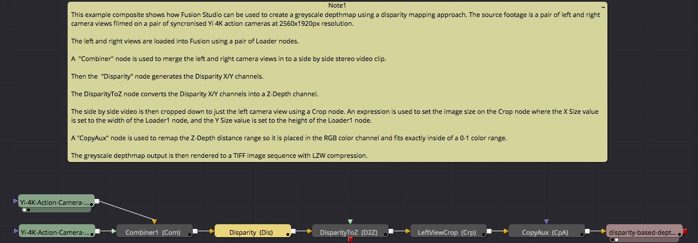
This example shows the Fusion based workflow needed to process unstitched Insta360 Pro camera fisheye media from an HDR tonemapped format into a final stitched LatLong Over/Under Color + Depthmap Z360 format.
Footage by RW Hawkins.
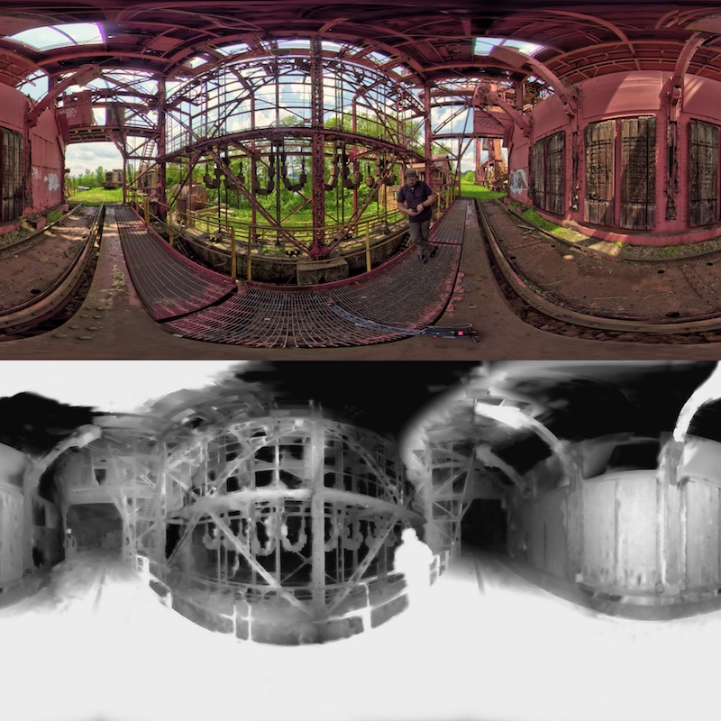
6x 212° FOV Circular Fisheye Views
360° / 6 photos = ~60° rotation (pan) per fisheye view
Step 0. "0_tonemapping" Folder
The source media was a bracketed set of images. I HDR merged the bracketed views and tonemapped the result using Photomatix Pro. This was done before the fisheye imagery was brought into Fusion/PTGui.


Step 1. "1_uvpass_warp" Folder
A UV Pass warping set of templated views was created using KartaVR's "Generate UV Pass in PTGui" script, along with PTGui Pro v10. The UV Pass map was used to output each view in a LatLong image projection format.
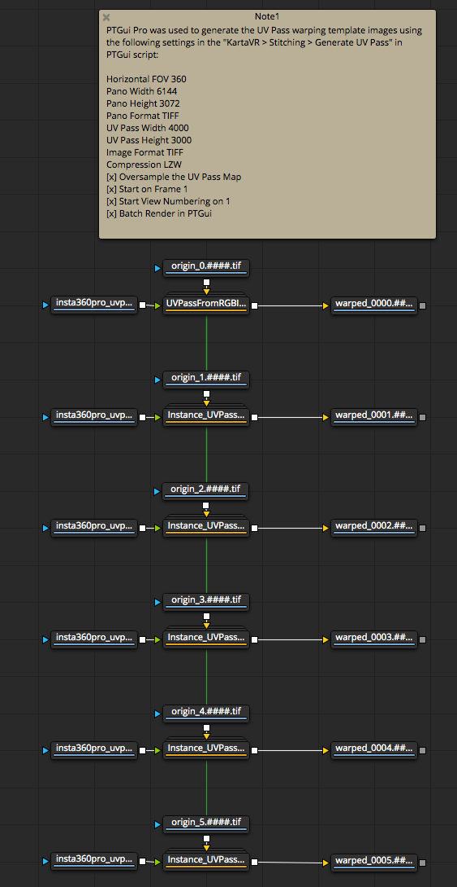
Step 2. "2_disparity_map" Folder
A set of depthmaps were generated from the Insta360 Pro footage. The result was saved to disk for the "left eye" based disparity mapped views.
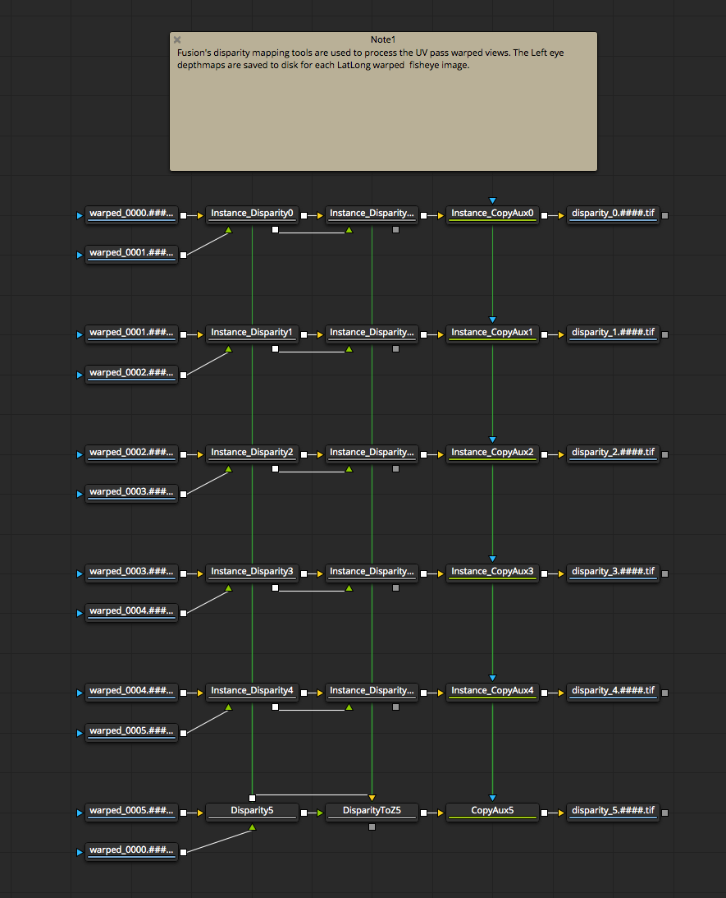
Step 3. "3_stitch" Folder
The color and depthmap views were stitched into a LatLong projection based Z360 Stye Over/Under Color + Depth image. This is a 6144x6144px image.
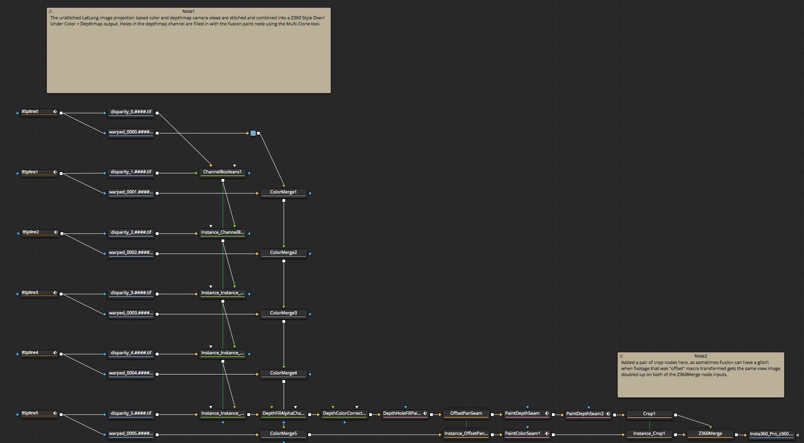
Step 4. "4_z360" Folder
The Z360Stereo node was used to create Stereo left/right eye color views from the Z360 stitched panorama. A color stereo version and depthmap stereo version is generated so you can see the results.
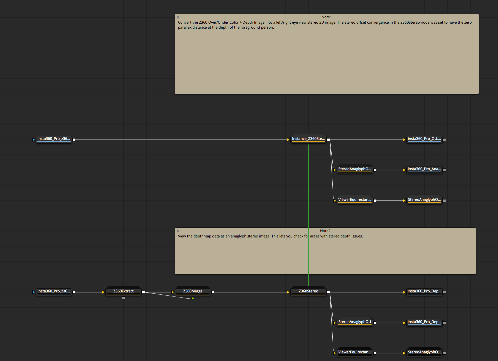
Note 1: Ideally you would use an Over/Under Color + Depthmap based player on your HMD to view the output of this process so you can have omni-stereo playback in real-time with accurate depth when you roll your head and look around in the scene.
Note 2: This was my first time using Insta360 Pro footage in KartaVR for Fusion. I suspect I will re-process this same footage again in the future to see if I can fix some of the disparity mapping/depth shading artifacts that are visible.
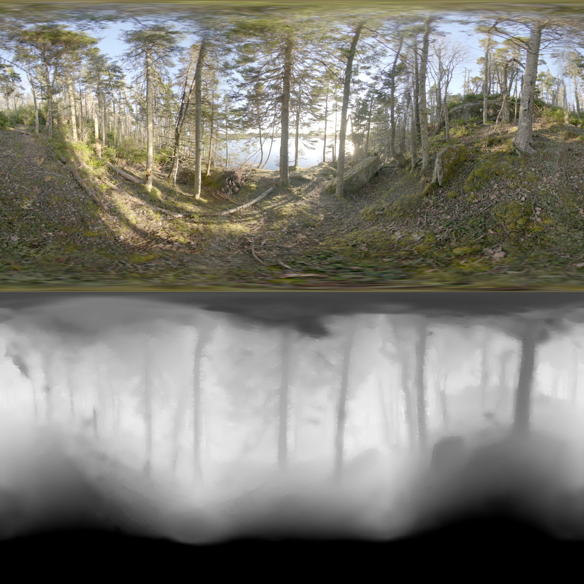
This example demonstrates a KartaVR workflow for stiching panoramic 360° stereo footage using color + disparity generated depthmap data.
There are macros present in the example comp that show a new "Z360 Stereo" (Z-depth based omni-directional stereo 360°) workflow. Z360 Stereo is a term for converting an over/under style color + depthmap equirectangular image into a regular Over/Under left and right equirectangular stereo view using a depth displacement approach.
This approach provides the freedom to change the IPD value (camera separation) in post so you can completely remap the stereo footage and tune it to have the exact amount of depth you want.
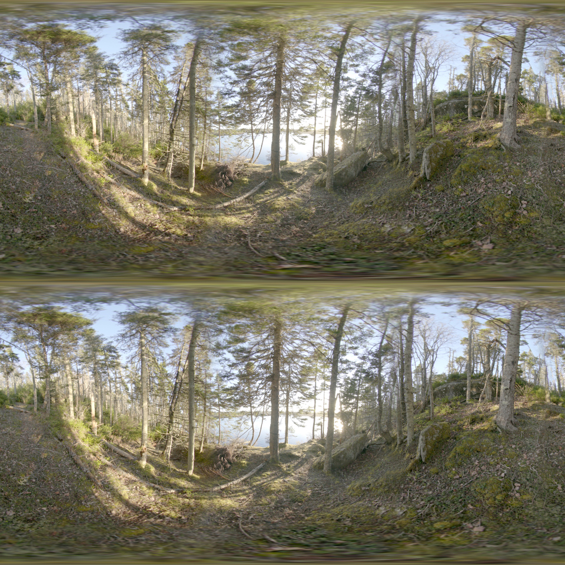
A set of three stereo pairs of circular fisheye 180° images are imported into the comp using 6 loader nodes
A "FisheyeCropMask" node is applied to each of the loader nodes to smoothly feather the border edges of the fisheye frames so they can be easily blended together. This node has controls for handling the cropped border frame area on the fisheye images where the circular frame of the fisheye image data is clipped by the top and bottom edges of the 16:9 video sensor. This is important to feather out if you want to have an effortless stitch.
Next the images are rotated upright and cropped/padded to a 1:1 aspect ratio.
A panoramic transform is provided by the standard KartaVR "FisheyeStereo2EquirectangularStereo" node to remap the circular fisheye images into a 360x180 equirectangular frame layout. The footage was filmed by rotating the camera on a Nodal Ninja head to three viewing positions using a 120° Y axis (Yaw) rotation values per view. The CameraA footage uses a "FisheyeStereo2EquirectangularStereo" node with a X Rotation value of 0, the CameraB footage has a 240° X Rotation value, and the CameraC footage has a 120° X Rotation value.
Then a set of Disparity > DisparityToZ > CopyAux nodes are used to generate a disparity based z-depth channel for the left and right camera views in each fisheye stereo pair. The output is a set of left and right views that have RGBA, and Z-Depth data.
The depthmap data is merged using a series of ChannelBoolean nodes set to use the Minimum transfer mode which will layer the images so the darkest pixels from the foregound or background input are the elements that are kept when the views are blended together.
The color images are combined using a series of Merge nodes.
To create a high quality stitch the color and depth images have a tripod patching job applied. This paint work is done on a Horizontal Cross cubic image layout.
Finally the footage is stacked into an equirectangular projection based Over/Under frame layout. The color imagery is placed on the top of the frame, and the depth data placed on the bottom of the frame. This frame layout is called "Z360 Stereo" to refer to a z-depth based stereo 360° VR image.
The output from this composite is: a over/under color + depth based z360 image, and an over/under stereo 3D left and right view image generated by the "Z360Stereo" node.
For convenience there is also an anaglpyh preview created using the KartaVR provided "StereoAnaglyphOU" node which can be viewed in a stereo using a 360° media player like GoPro VR Player with red/cyan based anaglyph 3D glasses on.
The 360VRDolly node can be used to create post-produced omni-directional stereo 3D compatible XYZ translation and rotation effects.
The example footage was filmed on a Sony A7Sii camera by Andrew Hazelden.
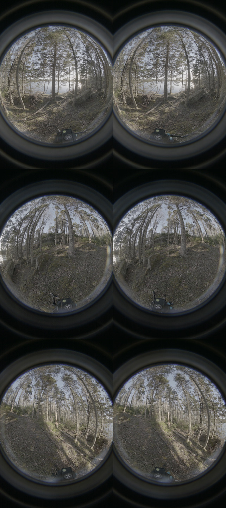
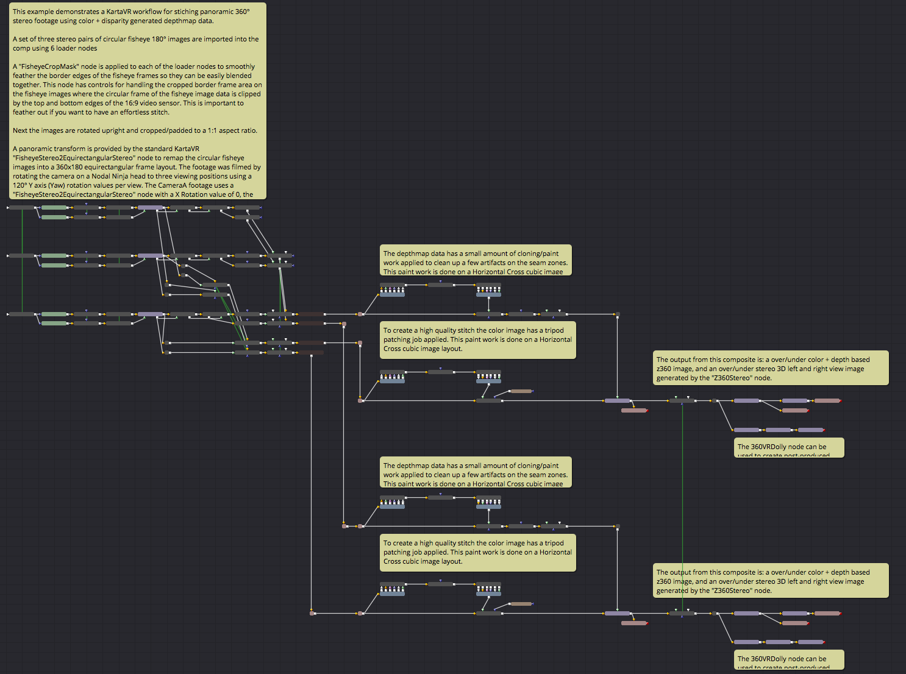
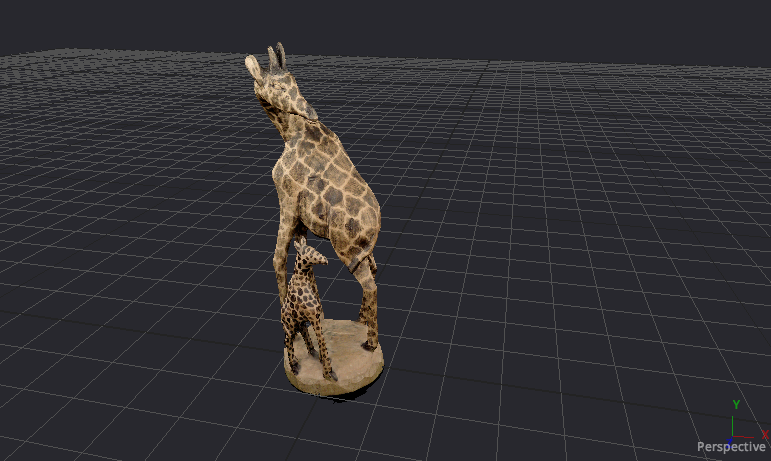
This example loads a fully processed photogrammetry model of a wooden giraffe carving into the Fusion comp and renders it out into Equirectangular 2D mono, and Equirectangular Over/Under stereo 3D animations. Photogrammetry based mesh data data renders quickly and efficiently in Fusion and works with the Fusion Renderer3D node's "software renderer" and the "OpenGL renderer" modes.
Having access to a live Oculus Rift based HMD output from Fusion + KartaVR makes it quite enjoyable to load in and explore these types of high resolution assets inside of Fusion's 3D workspace.
The source polygon model data that was used to make this demo was created in AGI Photoscan from a series of photographs of a wooden giraffe carving that was rotated on a turntable with a greenscreen background. This specific Fusion based "Photogrammetry Giraffe" example project is focusing on the task of rendering a finished photogrammetry model data in Fusion since using 3rd party tools like AGI Photoscan is outside of the scope of the KartaVR examples page.
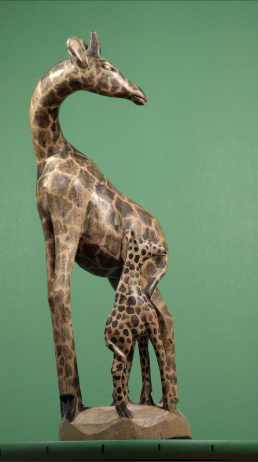
For this example project the Fusion comp starts by loading in a giraffe.jpg texture map, and a giraffe.obj polygon mesh.
The model is rotated slowly by applying an expression to the FBXMesh3D node's Y Rotation axis. The expression (time * 2) + 180 was used so the time based frame count variable from Fusion's timeline drives the rotation motion. A value of 180 was added to the end of the expression so the starting viewing angle on frame 0 of the project would have the model positioned with an initial rotation of 180° which causes the model to face the camera.
Next a Transform3D node was used to position the giraffe model in the scene moved back from the origin. This meant the multiple cameras added to the scene wouldn't have to be animated or adjusted.
Finally, a series of renderer3D node based panoramic cameras from KartaVR were used to render the photogrammetry model into various output formats. There is a version of the new OculusDK1StereoRenderer3D, and OculusDK1StereoRenderer3D nodes present in the example comp, along with the standard EquirectanglarRenderer3D node.
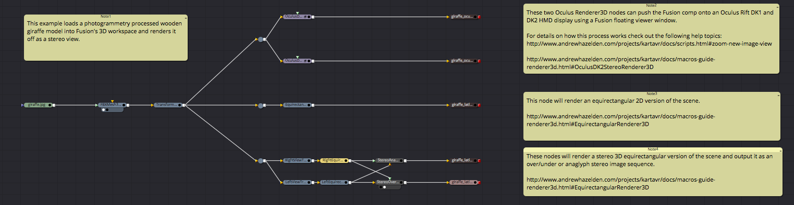
Here is a link to a short YouTube 360 video rendering from the over/under stereo equirectangular output created by the giraffe example:
There is a KartaVR Send to Photoscan Script video tutorial that accompanies this project.
The Photogrammetry Greenscreen Keying.comp example pulls a basic greenscreen key using Fusion's Primatte node. The object in the video clip is a wooden mask that is rotated slowly on a turntable. The final keyed output from this composite will be used as part of a photogrammetry workflow in AGI Photoscan.
The primatte node is used to generate an alpha mask that is combined with the original footage using a ChannelBoolean node set to copy the AlphaFG data. Then an AlphaMultiply node is used to pre-multiply the transparent areas in the image. Finally a WhiteBalance and ColorCorrector are used to adjust the lighting in the keyed image.
The footage is saved to disk as a TIFF image sequence at 8 bits per channel with LZW compression. The Save Alpha option enabled in the Saver node so AGI Photoscan will be able to use the transparent background information from the footage as a geometry mask when a photogramemtry based polygon mesh is generated.
Next the Primatte keyed footage was then pushed into an AGI Photoscan .psx project file by selecting the saver node footage in the flow area and then running the new Send to Photoscan tool that can be run using the Script > KartaVR > Photogrammetry > Send Media to Photoscan menu item.
In the Send Media to PhotoScan script Gui the Layer Order is set to "Folder + Filename". The View Chunks option is set to "All Media in One Chunk".
The Image Width and Height is set automatically based upon your Fusion flow are selected loader/saver node's resolution.
The Use Alpha Masks checkbox was enabled so a matching alpha channel image was generated automatically for each of the photos added to the AGI Photoscan project file.
Finally the "OK" button was clicked.
The Send Media to Photoscan script then saved out a project file called Photogrammetry Greenscreen Keying.psx.
Since the "Open Output Folder" checkbox was active the new .psx format project file was displayed in a new desktop file browser window. This .psx project was double clicked on and opened up in a new AGI Photoscan session.
Using AGI Photoscan the greenscreen keyed turntable photos were aligned, a dense point cloud was calculated from the views, a mesh was created, and then a final texture map was generated. With the photogrammetry process complete AGI Photoscan was used to exported an OBJ format polygon mesh and a texture map for the mask.
The Loading the Mask Mesh.comp composite loads in the AGI Photoscan generated "Mask.obj" polygon mesh and applies the "Mask.obj" texture map. If you load the "FBXMesh3D1" node into Fusion's viewer window you can explore the 3D model inside of Fusion's 3D workspace.